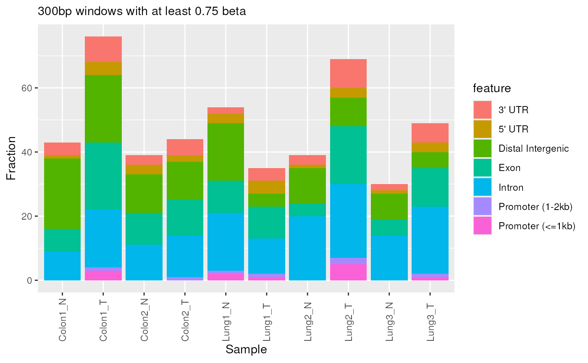
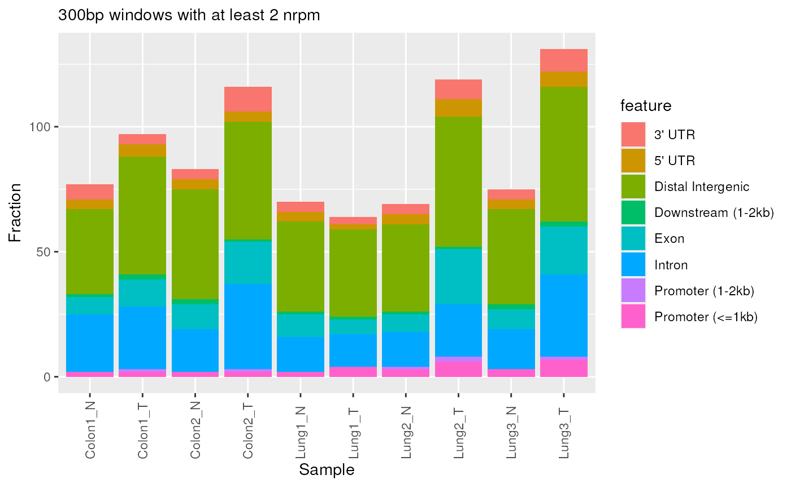
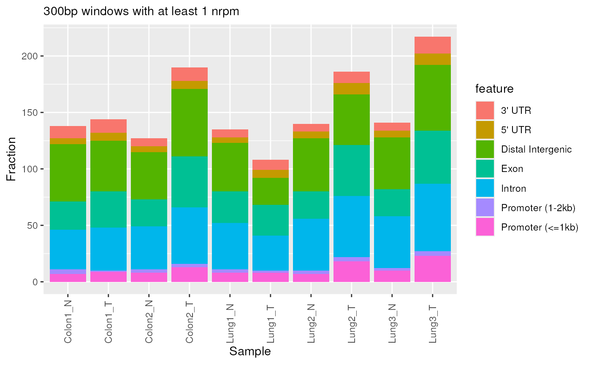

R/plotting.R
plotGenomicFeatureDistribution.RdAnnotate windows (e.g., promoters/exons/introns) and plot the distribution per sample as stacked/dodged/filled bars.
plotGenomicFeatureDistribution(
qseaSet,
cutoff = 1,
barType = "stack",
normMethod = "nrpm",
genome = NULL,
TxDb = NULL,
annoDb = NULL
)qseaSet.
Input object containing windows and signal (beta or nrpm).
numeric(1).
Threshold applied to the chosen normalisation measure per window.
Default: 1.
character(1).
Bar layout: one of "stack", "dodge", or "fill" (relative proportions).
Default: "stack".
character(1).
Normalisation/measure to threshold. One of "nrpm" or "beta".
Default: "nrpm".
character(1) or NULL.
Genome build (e.g., "hg38", "hg19", "mm10"). If provided, uses
mesa's genome system via getMesaTxDb() and getMesaAnnoDb().
Default: NULL (uses TxDb and annoDb parameters).
TxDb object or NULL.
Transcript database for gene annotation. Ignored if genome is provided.
Default: TxDb.Hsapiens.UCSC.hg38.knownGene for backward compatibility.
character(1) or NULL.
Annotation database name (e.g., "org.Hs.eg.db"). Ignored if genome is provided.
Default: "org.Hs.eg.db".
A ggplot2 object showing counts (or proportions, for "fill")
of feature classes per sample above cutoff.
Feature classes are taken from region annotations available on the windows
(e.g., columns produced by annotateWindows() such as shortAnno/annotation,
if present). Bars are positioned according to barType (stack/dodge/fill).
annotateWindows(), qsea::makeTable(), ggplot2::geom_bar()
Other annotation-summaries:
getGenomicFeatureDistribution()
# Recommended workflow: set genome globally
setMesaGenome("hg38")
data(exampleTumourNormal, package = "mesa")
# Uses global hg38 setting
exampleTumourNormal %>%
plotGenomicFeatureDistribution(normMethod = "beta", cutoff = 0.75)
#> obtaining raw values for 10 samples in 819 windows
#> deriving beta values...
#> creating table...
#> 'select()' returned 1:1 mapping between keys and columns
#> Don't know how to automatically pick scale for object of type <table>.
#> Defaulting to continuous.

# Override for specific analysis
exampleTumourNormal %>%
plotGenomicFeatureDistribution(genome = "mm10", normMethod = "nrpm", cutoff = 2)
#> obtaining raw values for 10 samples in 819 windows
#> deriving nrpm values...
#> creating table...
#> 'select()' returned 1:1 mapping between keys and columns
#> Don't know how to automatically pick scale for object of type <table>.
#> Defaulting to continuous.

# Advanced: manual control (bypasses mesa genome system)
exampleTumourNormal %>%
plotGenomicFeatureDistribution(
TxDb = TxDb.Mmusculus.UCSC.mm10.knownGene::TxDb.Mmusculus.UCSC.mm10.knownGene,
annoDb = "org.Mm.eg.db"
)
#> obtaining raw values for 10 samples in 819 windows
#> deriving nrpm values...
#> creating table...
#> 'select()' returned 1:1 mapping between keys and columns
#> Don't know how to automatically pick scale for object of type <table>.
#> Defaulting to continuous.
